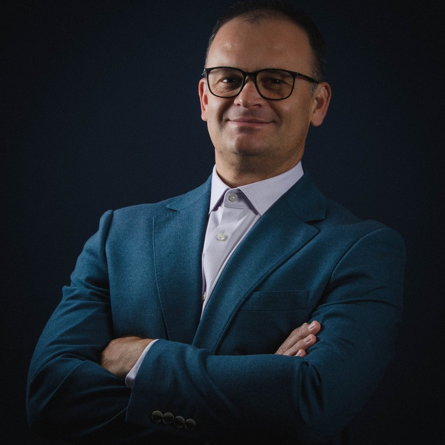
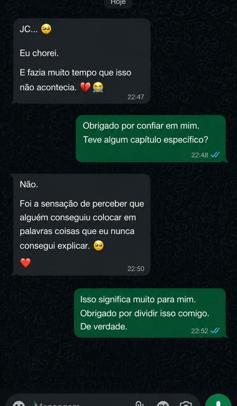

A Caverna Interior · J. C. Dias
Por fora, tudo de pé.
Por dentro, algo precisa ser reconstruído.

A Caverna Interior · J. C. Dias
A sua caverna
Algumas cavernas são de concreto. A maioria é invisível.
Dá para estar preso sem nunca ter visto uma cela.
A queda
Uma manhã bastou. Um acidente, e tudo o que me definia foi tirado: o nome, a liberdade, o chão.
Na primeira noite na cela, eu quase desisti. Foi a voz da minha filha que me segurou: "Dad, I love you. Don't give up."
Eu respondi: eu vou ficar. E foi ali que a reconstrução começou.
O método
Passado é memória. Futuro é hipótese. Só o presente aceita uma decisão.
Não é um método para controlar a vida. É um mapa para se reconstruir dentro dela.
Da queda vieram as oito ferramentas que me tiraram do escuro:
A reconstrução
Sair do fundo é só metade. A outra metade é o que você constrói depois. É onde quase todo mundo para, e é a parte mais valiosa:
Quem você é, por baixo de tudo o que pode ser tirado.
As pessoas seguem quem já atravessou o que elas atravessam.
Não voltar a ser quem era. Voltar diferente.
Quem sustenta os seus braços sem aparecer.
Reconstruir dinheiro, família e fé ao mesmo tempo.
Reconstruir só o dinheiro, e destruir o resto, é só trocar de cela.
O autor

J. C. Dias é diretor de operações, com mais de vinte anos de liderança no Brasil e no Reino Unido. Depois de um acidente, passou 11 meses e 2 semanas preso, longe da família, e escreveu à mão o método que virou este livro.
Ninguém me ensinou a recomeçar. Eu aprendi no fundo do poço.
Mensagens reais
Estas mensagens são de leitores dos meus livros anteriores. A Caverna Interior nasce da mesma história e do mesmo método.

Dúvidas
É digital. Um ebook que você lê no celular, no computador, no tablet ou no Kindle. Não vai nada pelo correio.
Na hora. Assim que o pagamento é confirmado, o acesso chega no seu e-mail. Em poucos minutos você já está lendo.
Tem fé, mas não é um sermão. A fé é uma das oito ferramentas, ao lado de coisas práticas como rotina, disciplina e ambiente. Fala com quem tem fé e com quem só precisa de um chão para recomeçar.
Você tem 7 dias de garantia. Se o livro não falar com você, é só pedir e devolvemos 100% do valor. Sem burocracia, sem perguntas.
Não são quatro bônus soltos. Juntos, eles formam um sistema completo de reconstrução:
R$67
Pagamento único · Acesso imediato
Quero o livro e os bônus Acesso na hora, no seu celularEbook digital + 4 bônus · Pix ou cartão · Compra segura pela Hotmart
7 dias de garantia
Leia o livro. Se ele não falar com você, é só pedir dentro de 7 dias e devolvemos 100% do valor. Sem burocracia, sem perguntas.
A caverna não é castigo.
É convite.
Talvez você não tenha escolhido entrar. Mas ainda pode decidir o que vai carregar quando sair.
Não se trata só de sair da caverna. É voltar dela diferente.
Quero começar minha reconstrução Ebook + 4 bônus · R$67Pix ou cartão · 7 dias de garantia